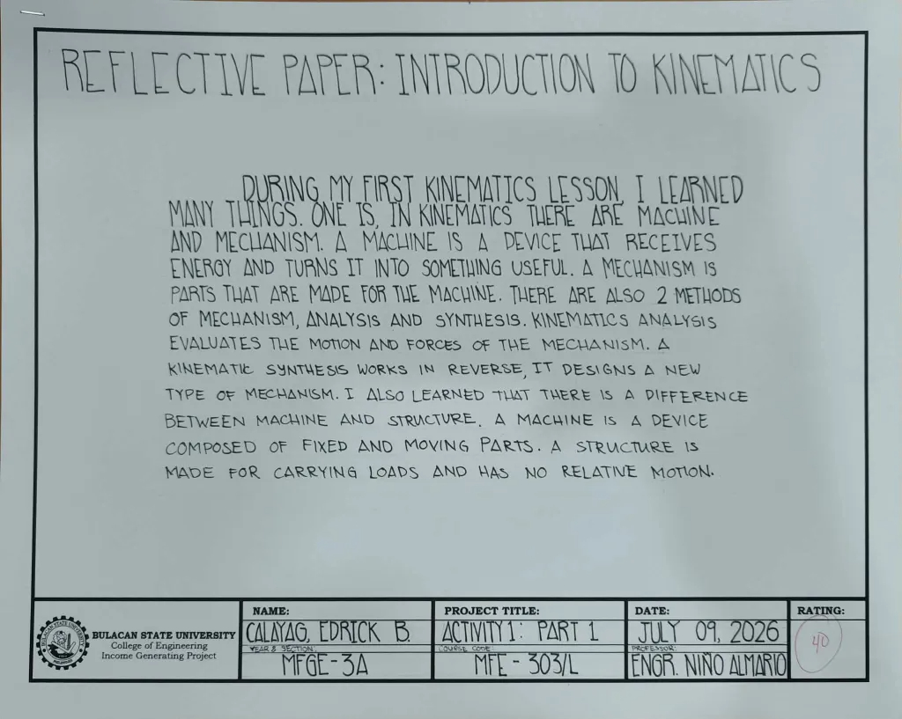
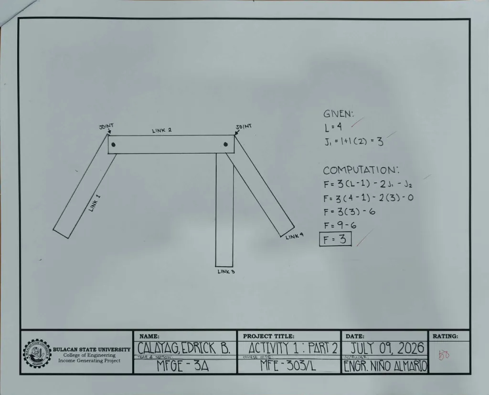
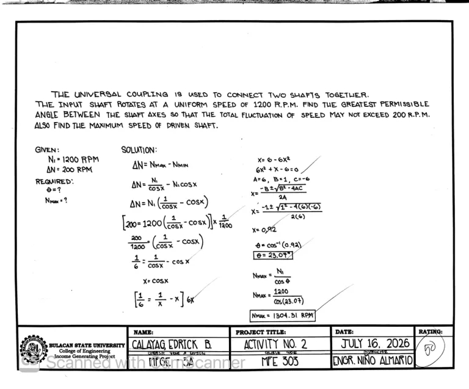
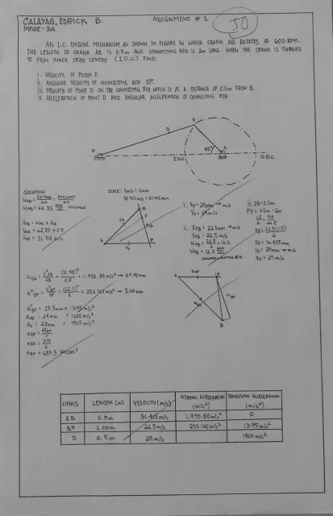
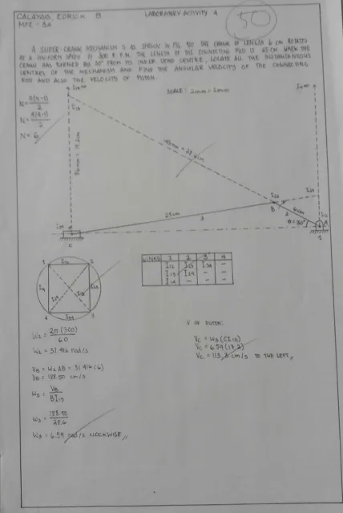
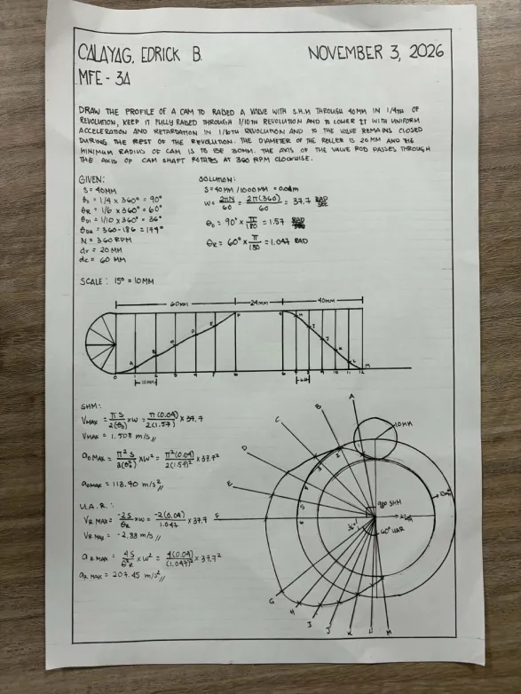

01
Lesson 1
Press play to watch the lesson here.
Learn the basic principles of kinematics and how different mechanisms produce motion.
Understanding motion. Exploring mechanisms. Discovering how machines move.
Explore the subject01 / INTRODUCTION
Kinematics is the study of motion without focusing on the forces that cause it. In machinery, it helps us understand how connected parts move, rotate, and interact.
From gears and linkages to cams and crank mechanisms, kinematics is essential for analyzing motion and designing machines that perform useful tasks accurately and efficiently.
Position, velocity, and acceleration describe how machine components move.
02 / VIDEO LIBRARY
Watch the Kinematics of Machineries lessons here. If a video cannot play on this page, use its YouTube link.
Press play to watch the lesson here.
Learn the basic principles of kinematics and how different mechanisms produce motion.
 Watch on YouTube ↗
Watch on YouTube ↗
Click the thumbnail to watch Lesson 2 on YouTube.
Understand how to calculate the degrees of freedom and mobility of mechanisms.
Press play to watch here. If playback is blocked, watch Lesson 3 on YouTube ↗.
Explore how velocity and acceleration are analyzed in four-bar mechanisms.
Press play to watch the lesson here.
Learn how to locate instantaneous centers of rotation in four-bar mechanisms.
Press play to watch the lesson here.
Discover how cams and followers work together to produce controlled motion.
04 / MY OUTPUTS

Laboratory Activity No. 1 Part 1. Click the image to enlarge.

Laboratory Activity No. 1 Part 2. Click the image to enlarge.

Laboratory Activity No. 2. Click the image to enlarge.

Laboratory Activity No. 4. Click the image to enlarge.

Laboratory Activity No. 5. Click the image to enlarge.

Assignment. Click the image to enlarge.
05 / SOURCES & REFERENCES
References for the five lessons and three background sources about Kinematics of Machineries.